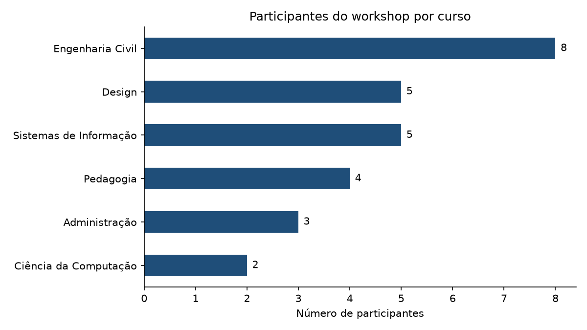

Jornada Interdisciplinar · Workshop
Automação
com Python🐍
Faça o computador trabalhar por você.
01 · O problema
Quem aqui já...
Clique nos cartões para contar as mãos levantadas 👆
02 · O conceito
O que é automação?
É pedir para o computador fazer as tarefas repetitivas e previsíveis, enquanto você cuida do que exige criatividade.
Regra prática: se você faz sempre do mesmo jeito, dá para automatizar.
Manual vs Python
Organizar 300 arquivos
Gerar 30 certificados
*tempos estimados, só para ilustrar
03 · A ferramenta
Por que Python?
Em português:
- para cada arquivo na pasta:
- se a extensão for ".jpg":
- mova o arquivo para "Imagens"
04 · Interdisciplinar
Serve para o seu curso também
Passe o mouse (ou clique) nos cartões
05 · Ao vivo
Uma pasta bagunçada organizada em segundos
C:\Pratica1> ▌
06 · Ao vivo
De uma planilha para 27 certificados
| Nome | Curso | Presente |
|---|
os certificados aparecem aqui
Na planilha completa: 30 inscritos → 27 presentes → 27 PDFs. Clique num certificado para ver o PDF de verdade.
07 · Com responsabilidade
Grandes poderes, grandes cuidados
Teste numa cópia
Um script errado também é rápido para estragar tudo.
Dados pessoais
Nomes, e-mails e CPFs são protegidos pela LGPD.
Respeite os sites
Antes de coletar dados, leia os termos de uso.
IA ajuda, mas...
...você precisa entender o código que vai rodar.
08 · Agora é com vocês
Mão na massa 🛠️
- Conferir o ambienteverificar_ambiente.py
- Prática 1Organizador de pastas
- Prática 2Certificados automáticos
- Desafios bônusGráfico e web scraping
- EncerramentoE agora?
Como rodar um script no VS Code
.py na barra lateralPreencha as lacunas ___. Se aparecer NameError: name '___', é só sinal de que falta completar alguma!
Bônus: relatório com gráfico

09 · Deu erro?
Calma, erro faz parte 😅
NameError: name '___' is not defined
Ainda tem lacuna sem preencher. Procure os ___ no arquivo.
ModuleNotFoundError: No module named 'pandas'
Falta instalar a biblioteca. Rode o verificar_ambiente.py pelo ▶ e responda s: ele instala tudo no Python certo.
O botão ▶ não aparece no VS Code
Falta a extensão Python. Aperte Ctrl+Shift+X (Mac: Cmd+Shift+X), procure Python (da Microsoft) e clique em Instalar.
FileNotFoundError: ... pasta_baguncada
Rode primeiro o criar_bagunca.py.
PermissionError ao gerar o PDF
O certificado está aberto no leitor de PDF. Feche e rode de novo.
IndentationError
Os espaços no começo da linha estão desalinhados. Em Python, o alinhamento importa!
KeyError: 'Nome'
O nome da coluna está diferente da planilha. Confira maiúsculas e acentos.
Instalei, mas continua dando ModuleNotFoundError
O VS Code está usando outro Python. Ctrl+Shift+P (Mac: Cmd+Shift+P) → Python: Select Interpreter, escolha o Python 3 e rode o verificar_ambiente.py de novo.
Ainda travado? Levante a mão ✋ e chame quem está circulando pela sala.
10 · E agora?
Qual tarefa repetitiva da sua área você vai automatizar?
Para continuar estudando
- 📗 Automate the Boring Stuff with PythonAl Sweigart: gratuito online, em inglês. Em português: Automatize tarefas maçantes com Python.
- 🐼 10 minutes to pandasO guia rápido oficial do pandas.
- 🐍 python.org.brComunidade Python Brasil.
Abra este site no celular
Obrigado! 🎉